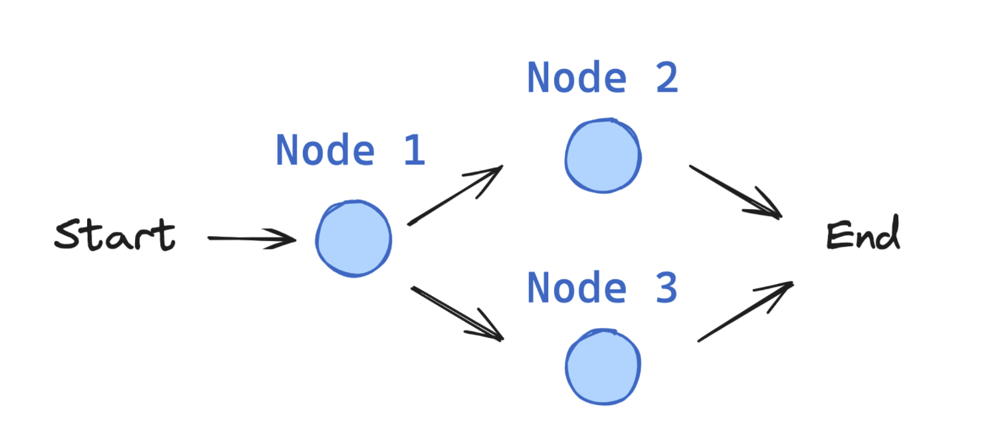

LangGraph简介#
LangGraph简介#
LangGraph 是由 LangChain 开发的一个框架，用于管理集成大型语言模型（LLM）的应用程序的控制流程。
框架 |
定义 |
核心功能 |
典型场景 |
可视化 / 调试 |
集成与扩展 |
安装命令 |
|---|---|---|---|---|---|---|
LangChain |
面向 LLM 的通用开发框架 |
链式调用（Chains）、Prompt 管理、Memory、工具调用（Tools） |
快速搭建问答、RAG、插件化 Agent、流水线式文本处理 |
日志输出，第三方插件支持少 |
可与任何 LLM、检索后端、数据库、API 无缝对接 |
|
LangGraph |
基于图的执行引擎，用于管理复杂或多 Agent 的控制流程 |
有向图（Nodes/Edges）、状态机、执行图可视化 |
多步骤工作流、条件分支、子 Agent 协作、流程可视化 |
内置执行图渲染、交互式调试 |
可选使用 LangChain 的 LLM/Tool 类；也可独立管理自定义节点逻辑 |
|
LangSmith |
LangChain Labs 推出的观测与管理平台 |
调试面板、执行轨迹记录、Prompt & 变量历史、性能指标 |
线上应用监控、Prompt 调优、团队协作、模型和流程性能分析 |
丰富的可视化仪表盘、追踪回溯 |
与 LangChain、LangGraph 深度集成；支持多项目、多环境隔离 |
|
LangGraph 擅长的关键场景包括：
需要对流程进行显式控制的多步骤推理过程
需要在各步骤之间保持状态持久化的应用
将确定性逻辑与 AI 能力相结合的系统
需要人机交互介入的工作流
多个组件协同工作的复杂智能体架构
LangGraph 如何工作？#
LangGraph 的核心是使用有向图结构来定义应用的流程：
节点（Nodes） 代表各个处理步骤（例如调用 LLM、使用工具或做出决策）。
边（Edges） 定义步骤之间可能的转换。
状态（State） 由用户定义，在执行过程中维护并在节点之间传递。当决定下一个要执行哪个节点时，会参考当前状态。
它与常规 Python 有何不同？为什么需要 LangGraph？#
你可能会想：“我完全可以用常规的 Python if-else 语句来处理所有这些流程，对吧？”
虽然从技术上讲确实可行，但 LangGraph 在构建复杂系统时相较于纯 Python 提供了诸多优势。你可以不用 LangGraph 也能实现同样的功能，但 LangGraph 为你构建了更简便的工具和抽象，包括：
状态管理
可视化
日志记录（执行轨迹）
内置人机交互
以及更多功能。
LangGraph的组成部分#
在 LangGraph 中，一个应用从入口点（entrypoint）开始，执行过程中，流程会根据情况转向不同的函数，直到到达结束（END）。

概念 |
说明 |
|---|---|
State |
用户定义的状态对象，包含执行流程中所需的所有数据，并在各节点间传递，用于决策和控制流程。 |
Nodes |
有向图中的节点，表示具体的处理步骤或操作（如调用 LLM、执行工具、做出决策等）。 |
Edges |
有向图中的边，定义节点之间的可能跳转路径及其条件，决定流程的分支和顺序。 |
StateGraph |
由节点（Nodes）和边（Edges）组成的有向图结构，描述整个应用的执行流程和状态流转。 |
State#
状态是 LangGraph 中的核心概念，它代表了在你的应用程序中流动的所有信息。